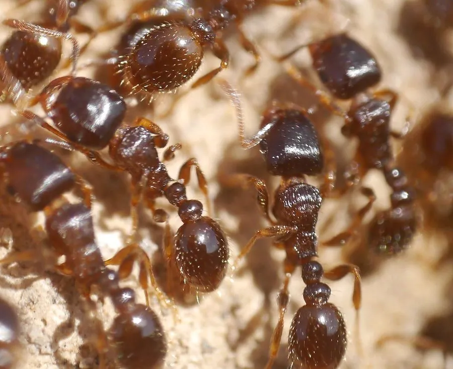

昆虫 · 动物界
铺道蚁 Tetramorium caespitum

体黑褐、工蚁仅两三毫米的小型蚂蚁，在路面缝隙和砖石下筑巢，多后制群体，是城市人行道上的常见蚁类。
- 分类
- 门节肢动物门纲昆虫纲目膜翅目科蚁科属铺道蚁属
- 栖息环境
- 人行道砖缝、路缘石下、墙基、草坪和空地的土壤中
- 地理分布
- 欧洲、亚洲温带地区和北美，中国北方与长江流域城市常见
- 保护级别
- 尚无保护级别；为城市常见蚁类，侵入室内时用饵剂防治
物种志
铺道蚁的工蚁体长约二至三毫米，体色黑褐至深褐，体表有细密的纵纹和短毛，头部长方形，上颚发达，前胸背板略扁平，腹柄由两节组成，第二节明显膨大。蚁后体型较大，胸部发达，颜色略浅。它的群体常有多只蚁后共存，称为多后制，这使群体扩张很快，也难被彻底清除。
它分布于欧洲、亚洲温带地区和北美，在中国北方和长江流域的城市中极为常见，栖息在人行道的砖缝、路缘石下、墙基、草坪和空地的土壤中，巢口周围常堆着细小的土粒。它是杂食性蚂蚁，取食昆虫尸体、花蜜、种子和人类丢弃的食物，工蚁沿固定路线排队行进，铺道蚁之名由此而来。它在夏季婚飞，雄蚁与处女蚁后在空中交配。它没有保护级别，被侵入室内时可用饵剂防治；被惊动时会咬人，但毒性很弱。
形态与习性
- 工蚁体长约二至三毫米，黑褐色
- 腹柄由两节组成，第二节明显膨大
- 群体多后制，多只蚁后共存
- 筑巢路面砖缝、墙基和草坪土壤，巢口堆土粒
- 食性杂食，取食昆虫尸体、花蜜、种子和食物残渣
- 婚飞夏季婚飞，空中交配
趣味知识
- 它的巢就藏在人行道的砖缝里，巢口那一小堆土粒就是标志。
- 一个群体里常有好几只蚁后，所以很难靠挖巢把它清干净。
- 工蚁会沿着同一条路线排队走，像一条流动的黑线。